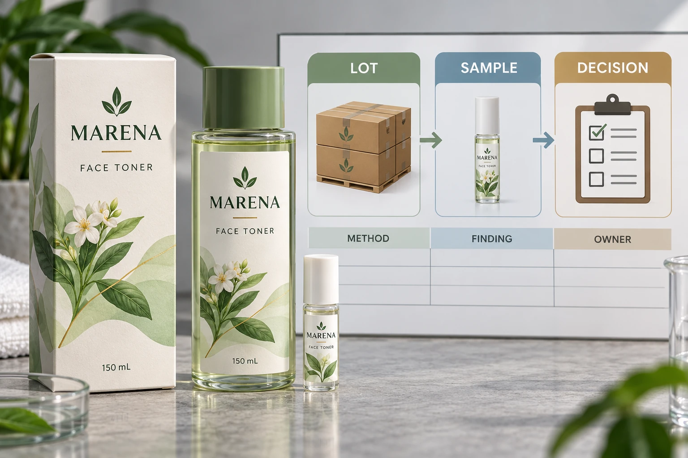

Define the lot before choosing the sample
Identify what the decision covers. A shipment can contain several artwork versions, production references or deliveries combined for transport. The shipping carton alone may not define the inspection lot the quality team intends to assess.
Ask the responsible quality owner how lots are defined and how their identities connect to supplier records. Record product, artwork revision, construction, relevant production reference and delivery units as applicable. Mark missing information rather than assuming all rolls share one production history.
The quantity-variance guide addresses the commercial quantity agreement. Incoming inspection concerns conformity and disposition. Receiving the agreed count does not establish that the inspected characteristics meet their requirements.
Make the inspected requirements observable
Identify the relevant approved artwork, specification or sample for each characteristic. A reviewer needs a defined comparison for wording, dimensions, appearance, roll arrangement or another requirement; the word quality is too broad to make a reproducible decision.
Have the quality owner define defect categories and applicable criteria. Different concerns may require different methods or authorities. This article supplies no severity classification, acceptance limit or claim that an ordinary visual check can establish every physical property.
State which checks occur on incoming stock and which require a separate application or technical evaluation. A roll can be identified and visually inspected without proving its behavior on a filled bottle or a particular applicator. Keep those evidence boundaries visible in the release record.
Use sampling for its stated purpose
NIST's acceptance-sampling guidance distinguishes the lot-acceptance decision from estimating the lot's quality. That distinction matters when a team is tempted to report a sample finding as the exact condition of every label delivered.
Have a competent quality specialist select the applicable plan and explain its scope, assumptions and decision rules. If a standard is used, identify its edition and the actual agreed implementation. Purchasing should not invent the missing plan from a sample size printed in another supplier's checklist.
Record how samples are selected and which supplied units they represent. Convenient labels from the outside of one roll may not satisfy an agreed selection method. The person performing inspection should follow the authorised plan and record deviations for the decision owner.
Prepare the receiving decision record
The following worksheet coordinates inputs. It is not itself a statistical sampling plan.
| Field | Information required | Responsible decision |
|---|---|---|
| Lot identity | Defined scope and supplier references | Quality owner confirms what is assessed |
| Requirements | Approved files, specifications and samples | Relevant owners confirm comparison criteria |
| Plan | Method, selection and decision-rule reference | Qualified quality owner authorises use |
| Samples | Identified locations and actual observations | Inspector records what was examined |
| Deviations | Missing access, changed method or other limitation | Quality owner determines effect on decision |
| Disposition | Accepted, held or other authorised response | Named authority records the outcome |
| Follow-up | Supplier evidence and stock-control actions | Assigned contacts close unresolved items |
Complete identity and requirements before sampling. Follow the authorised selection and inspection method, record findings and submit them to the decision owner. Apply the agreed disposition to the identified stock, then preserve the evidence needed for any supplier review.
If a finding requires investigation, use the quality-issue evidence guide to connect photographs and samples to the affected references. Reporting a concern does not automatically establish a contractual remedy or the cause of the discrepancy.

Do not replace a missing plan with confidence
A hypothetical established supplier arrangement may already have a current agreed inspection plan and controlled references. Receiving can confirm that the new shipment falls within its scope and execute the documented process.
A new construction, new supplier or changed requirement may need the quality owner to review the approach before delivery. A reassuring first sample does not resolve that planning gap. Equally, one observed issue should be reported accurately without declaring every unexamined label affected.
If the site cannot perform a required check, identify the missing capability and obtain an authorised alternative or hold decision. Do not mark the row passed because the filling schedule is approaching. The unresolved question belongs to a named owner and a specific lot.
For cosmetic label procurement, provide dimensions, artwork, quantity per version and the receiving team's agreed inspection requirements. Ask which supplier records will accompany the delivery. The contact form prepares a message; send specifications by email or WhatsApp. Agree the evidence and decision route before the carton becomes an urgent production dependency.